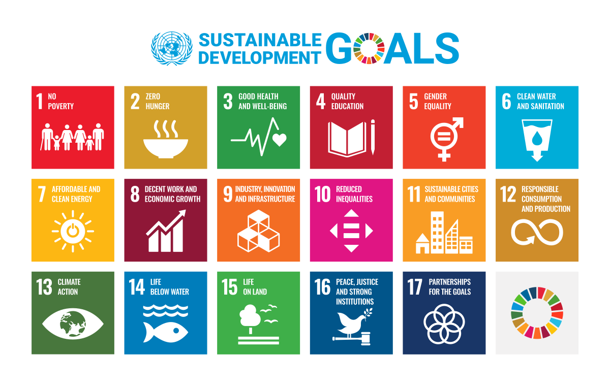
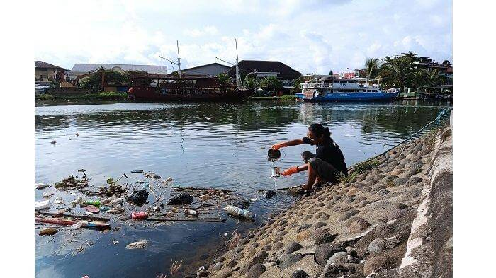
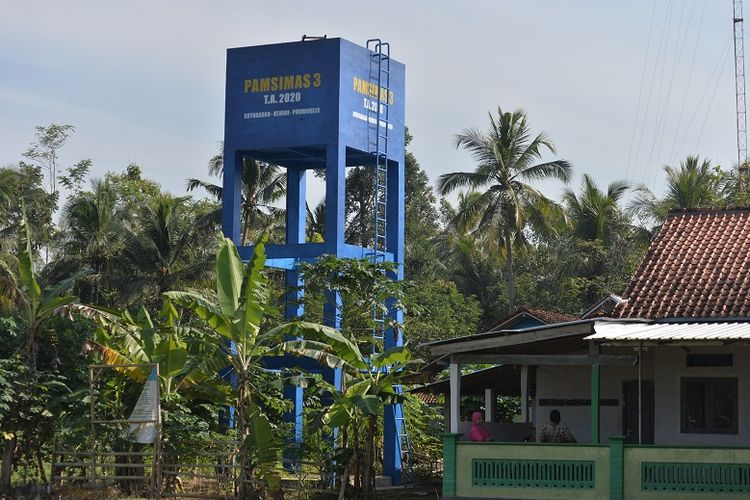

SDGs adalah singkatan dari Sustainable Development Goals, atau dalam Bahasa Indonesia disebut Tujuan Pembangunan Berkelanjutan. SDGs merupakan tujuan global yang disepakati oleh negara-negara di dunia (termasuk Indonesia) untuk mewujudkan kehidupan yang lebih baik, adil, dan berkelanjutan bagi semua orang. SDGs ditetapkan oleh Perserikatan Bangsa-Bangsa (PBB) dan mulai berlaku sejak tahun 2016 hingga 2030, menggantikan program sebelumnya yaitu MDGs (Millennium Development Goals).
Mengakhiri kemiskinan dalam segala bentuk di mana pun.
Mengakhiri kelaparan, mencapai ketahanan pangan dan gizi baik.
Menjamin kehidupan yang sehat dan sejahtera untuk semua usia.
Memastikan pendidikan yang inklusif dan berkualitas.
Mencapai kesetaraan gender dan memberdayakan semua perempuan.
Menjamin akses air bersih dan sanitasi yang layak untuk semua.
Memastikan akses energi yang terjangkau, andal, berkelanjutan, dan modern.
Mendorong pertumbuhan ekonomi dan pekerjaan layak untuk semua.
Membangun infrastruktur, mendorong industrialisasi berkelanjutan, serta inovasi.
Mengurangi kesenjangan dalam masyarakat dan antar negara.
Membuat kota dan pemukiman manusia aman, tahan bencana, dan berkelanjutan.
Menjamin pola konsumsi dan produksi yang berkelanjutan.
Mengambil tindakan mendesak untuk melawan perubahan iklim dan dampaknya.
Melindungi dan memanfaatkan sumber daya laut secara berkelanjutan.
Melindungi dan mendorong penggunaan berkelanjutan ekosistem darat.
Mendorong masyarakat yang damai serta kelembagaan yang efektif dan inklusif.
Memperkuat kemitraan global untuk pembangunan berkelanjutan.
Mari berkontribusi untuk mencapai Tujuan Pembangunan Berkelanjutan (SDGs) demi dunia yang lebih baik! Setiap individu memiliki peran besar, mulai dari meningkatkan kesadaran melalui edukasi, menjadi relawan di kegiatan sosial dan lingkungan, hingga berinovasi menciptakan solusi kreatif yang mendukung keberlanjutan. Anda juga bisa berpartisipasi dengan mengurangi penggunaan plastik, hemat energi, dan menjadi konsumen yang bertanggung jawab. Bergabunglah dalam komunitas, sebarkan informasi melalui media sosial, atau bahkan dukung dengan donasi dan mengajar bagi mereka yang membutuhkan. Dengan langkah kecil dari kita semua, perubahan besar bisa terjadi untuk bumi dan generasi masa depan.
Waktu saya berkunjung ke kampung halaman mama dan papa saya di Curup, Bengkulu dan Belinyu, Kepulauan Bangka Belitung, saya justru menemukan air yang masih bersih dan layak digunakan oleh masyarakat. Berbeda dengan tempat tinggal saya sekarang di Jakarta, di mana kebersihan air sering kali kurang terjaga dan banyak masyarakat yang masih membuang-buang air bersih. Kesenjangan kualitas air yang ada saya rasakan cukup signifikan antara daerah asal saya dan tempat yang saya tinggali saat ini.
Tujuan SDGs ke-6 fokus pada akses ke air bersih dan sanitasi yang layak. Kondisi terkini menunjukkan bahwa akses air bersih masih menjadi tantangan besar, terutama di wilayah tertinggal dan kota yang padat. Di Indonesia, sekitar 12,6% rumah tangga belum mendapatkan akses air bersih yang layak, dan masalah pencemaran air dari limbah industri serta domestik masih menjadi penyebab utama. Meskipun ada upaya pembangunan sarana air bersih di beberapa daerah, masih dibutuhkan peran aktif masyarakat untuk menjaga keberlanjutan akses tersebut.
Sumber daya alam Indonesia yang melimpah dengan banyaknya sungai, danau, dan sumber air bawah tanah menjadi potensi utama untuk penyediaan air bersih.Sumber daya manusia yang semakin tereduksi dan berkembangnya kesadaran masyarakat tentang pentingnya sanitasi dan air bersih mendukung keberhasilan beberapa program-program SDGs. Inovasi teknologi yang terus maju, seperti penggunaan pengolahan air kotor di filtrasi menjadi lebih bersih secara modern, dan teknologi pemanenan air hujan. Kebijakan pemerintah yang sudah mengarahkan pada program nasional seperti PAMSIMAS (Penyediaan Air Minum dan Sanitasi Berbasis Masyarakat) dan berbagai program peningkatan infrastruktur air bersih di daerah-daerah terpencil, serta komitmen untuk pembangunan berkelanjutan yang melibatkan partisipasi masyarakat untuk segera mencapai target SDGs 6.
Membangun sistem pelayanan air bersih berbasis teknologi modern yang memantau kualitas, distribusi, dan penggunaan air agar air bersih dapat dipertahankan. Teknologi ini membantu pelayanan publik menjadi lebih efisien, transparan, dan cepat dalam mendeteksi dan menangani masalah kebocoran air yang menyia-nyiakan air bersih atau pencemaran air yang membuat air menjadi meluap hingga dapat menyebabkan banjir akibat aliran air tertutup. Mengembangkan dan menerapkan inovasi teknologi tepat yang berguna seperti Atmospheric Water Maker (AWM) yang mampu memproduksi air bersih dari udara, serta nanoteknologi dalam filtrasi air yang berguna untuk menyediakan cadangan lain sumber air di daerah terpencil dan kekurangan air atau daerah yang sumber airnya tercemar.
Mengajak masyarakat untuk bekerjasama melalui program pemberdayaan komunitas berbasis PAMSIMAS (Penyediaan Air Minum dan Sanitasi Berbasis Masyarakat) yang melibatkan gotong royong masyarakat dalam pengelolaan air dan sanitasi agar lebih berkelanjutan dan sesuai kebutuhan sesuai dengan kebutuhan. Mengikuti pelatihan dan edukasi untuk meningkatkan pengetahuan bagaimana air bersih dapat diterapkan di setiap rumah bagi para petugas dan agar petugas teknis mampu mengelola sistem air dengan cara yang profesional, bertanggung jawab, dan berintegritas yang melayani masyarakat dengan totalitas.